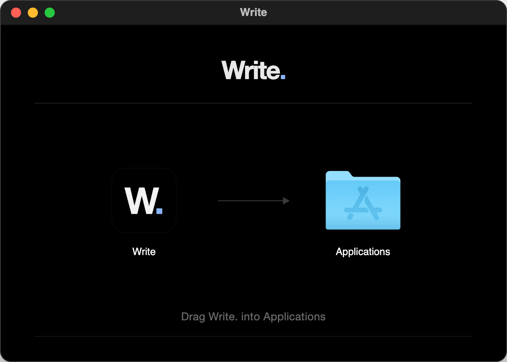

Installing Write.
Here's everything from downloading the file to opening Write. for the very first time. You'll need a Mac with Apple Silicon (M1 or newer) running macOS 12 Monterey or later.
-
Download the installer
Click the button below and the file goes straight into your Downloads folder. It's about 140 MB so it may take a moment on a slow connection.
-
Drag Write. into Applications
Double-click the file you just downloaded and a small window opens. Drag the Write. icon onto the Applications folder next to it and give it a few seconds to copy.

Once it's copied you can eject the installer from the Finder sidebar and move the downloaded file to the Bin.
-
Open Write.
Open your Applications folder and double-click Write. You can also press ⌘ Space, type Write and press Return.
-
Say yes to macOS the first time
Write. is a free app that isn't registered with Apple's paid developer programme, so macOS asks you to confirm it the first time you open it. When the message appears just click Done and leave the app where it is.
Then open System Settings and go to Privacy & Security. Scroll down until you see a note about Write. and click Open Anyway, then confirm with your password or Touch ID. You only ever do this once for each version you download.
Comfortable with Terminal? There's a shortcut
Once Write. is in your Applications folder this command does the same thing in one go.
xattr -dr com.apple.quarantine /Applications/Write.app
Updating
Download the newest version from this page, drag it into Applications again and choose Replace when you're asked. Your documents and settings stay exactly where they are.
Where your documents live
Every document is saved as a .write file in the Write folder inside Documents. If you'd rather keep them in iCloud Drive or Dropbox you can pick a different folder in Settings and everything there gets backed up for you.
Using Google Docs
You don't need a Google account to use Write. If you'd like to bring your Google Docs in, open Settings and click Sign in with Google. Importing opens Google's file picker in Google Chrome or Microsoft Edge, because Safari blocks the Google cookies the picker needs.
Uninstalling
Quit Write. and drag it from Applications to the Bin. Your documents stay in Documents until you decide to delete them yourself.